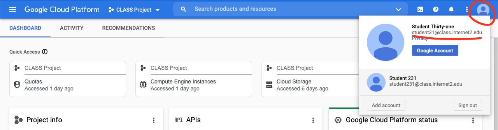
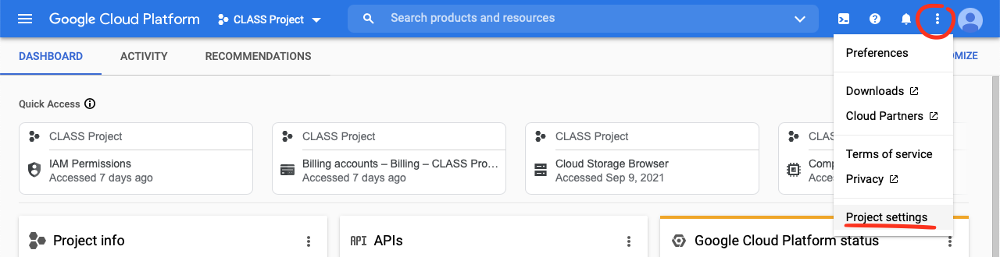
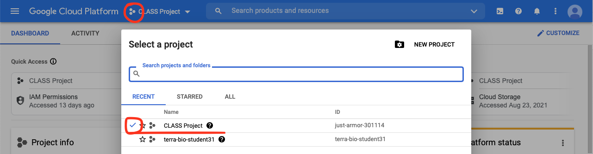
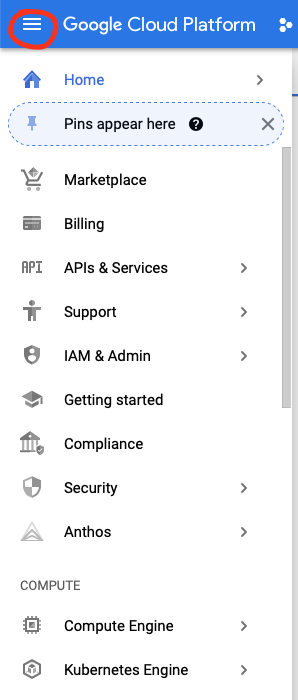
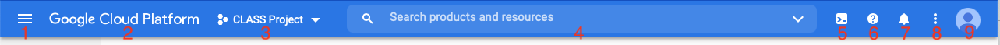

Introduction to the GCP Cloud Console¶
Learner Questions
How do I find things in the web console?
Learning Objectives
Login to the Google Cloud web console
Find and verify important information about your cloud environment.
The Who, What, and Where of the Cloud¶
Before we get started we must first define, and find, a few key pieces of information about your environment that will be used throughout this lesson. This information is also important to ensure that this information is what you expect, otherwise you may use the wrong account or run or store things in the wrong place. It is important to be clear about these terms as they are often different in other cloud providers. We provide a glossary of GCP terms for your reference.
Accounts (Authentication and Identity)¶
The (Google) Account is the identity used to access the Google Cloud Platform web console and is in the form of an email address and is associated with an individual (the who is you!). This is typically the account you use to access Google services associated with your institution and not your personal account. This is the “Who” of the cloud. We will now login to the Google Cloud Platform web console and verify our account.
Login to the web console with your (Google) Account by going to https://console.cloud.google.com/
Login with your credentials if you have not done so already.
Find your user/account under the “Avatar” in the top right (see below).

and click on it if it is not the top one.If you do not see your account click on “Add Account” and repeat the previous step.
The account list found under the avatar shows all the accounts that are logged in and the top one is the current active or selected account.
Exercise¶
Take a few moments to ask yourself the following questions:
What account are you currently using in the Google Cloud web console?
Are you logged into any other accounts?
How do you know which account is being used?
If you are not currently using the correct account, switch to it.
Projects¶
Almost everything you will do within Google Cloud Platform must be associated with a Project. This is the “Where” of the cloud. You must have at least one Project and you can manage multiple Projects within a single (Google) Account. Always make sure you are working in the correct project!
To find more information and change project settings
Click on the “Settings and Utilities button (kabob on the top right - see below) and then click on “Project Settings”

The Project Name is the human friendly description and can be changed.
The Project ID is set on project creation and cannot be changed. The Project ID is almost always used when specifying a project.
The Project Number is used internally by Google Services and is usually used indirectly. It is a good idea to be able to recognize this number.
For a Project to do anything useful it must also have an enabled Billing Account associated with it. An enabled Billing Account is a prerequisite for this lesson.
A Project, just like the word, should be associated with a real world project (for example a research effort or grant, lab, or your Ph.D. Project. etc). For Drew, this will be the Acceleration Lab project. In this way it is easier to track and allocate costs and to manage permissions and access for resources within the project.
The active project is also shown next to the project icon (three hexagons) and clicking it brings up the project selection dialog. The current project has a check mark and and the active project can be changed by clicking on the project name or double clicking the row.

Exercise¶
Take a few moments to ask yourself the following questions:
What is the name of the Project you are currently using in the Google Cloud Platform web console?
What is the Project ID of that project?
What is the Project Number of that project?
Do you have multiple projects?
How do you know which project you are currently using?
If you are currently not using the correct project for this lesson, switch to the correct one.
Services¶
The web console is used to control and observe the cloud from the browser. It should only be used for simple and one-time tasks, exploring new services, accessing documentation, or for monitoring and debugging resources in the cloud. Programmatic control through the console, programming languages (for example Python), and other automation tools should be used for day to day activities to make the most out of the cloud and to help with the reproducibility of research and teaching.
The Navigation Menu (often called the hamburger) is used to navigate to the various products, which are also sometimes called services.

Click on a product to navigate the product page
You can pin frequently used items on the top of this page by clicking on the pin icon.
Click the hamburger again to hide the Left Sidebar.
All the different products and services are the “What” of the cloud. We will start with Cloud Storage in the next Episode.
Everything Else¶
If you did not already notice, every page on the GCP web console has a blue navigation bar at the top of the page. This can be used to quickly navigate to the page you need.

From left to right of the blue top navigation bar we have the following items (hover over the item with your mouse to see the name):
Navigation Menu (often called the hamburger) allows you to go to each project and services page (shown below).
Dashboard (“Google Cloud Platform”) provides an overview of your project.
Click it and note resources, billing, and platform Status
This page is customizable and may look different.
Project selection button showing the current project name with a drop-down arrow.
Search bar - type in service or keywords
Type in “Cloud Storage” and note results. Click to navigate to the Cloud Storage page.
Activate Cloud Shell (terminal icon) - start the Cloud Shell
Click it and note the shell that appears on the bottom of the page.
Help (shown as a question) - quick link to documentation
Notifications (shown as a bell) - a dot indicates unread notifications
Settings and Utilities (often called the kabobb) - shortcut to project settings
Google Account (avatar at the far right) - verify and switch accounts.
Exercise¶
Before we move on, do the following:
Double check that you are in the correct account and project that you will be using for this lesson.
Take a moment to reflect on the “Who, What, and Where” of the cloud. Why is this important?